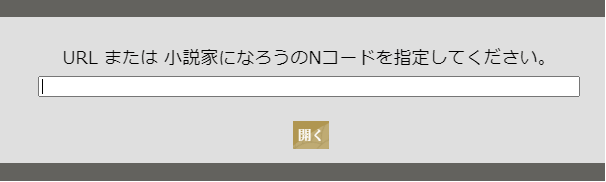

TxtMiru on the Web
- はじめに
- TxtMiru on the Webは、ブラウザ上でネット小説「小説家になろう」、「カクヨム」、「青空文庫」を縦組み表示にして読むことができます。
- リンク（縦書き対応サイト）
- 特徴
-
-
お使いのブラウザがそのまま小説ビューアに！
アプリのインストールは不要です。 -
お気に入り気に入った小説のリストを作成することができます。
お気に入りに登録することで、現在閲覧中のページの管理と小説の更新状況を一括で取得することができるようになります。
※お気に入りは、お使いのブラウザに保存されます。
-
小説の更新状況を一括で取得お気に入りにある小説の最新話数をまとめて取得することができます。
-
複数の小説サイトに対応（縦書き対応サイト）
-
ルビによる行間の広がりを調整ブラウザによってルビの分、行幅が広がる問題に対応
（参考）お使いのブラウザでの表示（調整なし） （調整あり） 吾輩は猫である。名前はまだ無い。
どこで生れたかとんと 見当がつかぬ。何でも薄暗いじめじめした所でニャーニャー泣いていた事だけは記憶している。吾輩はここで始めて人間というものを見た。吾輩は猫である。名前はまだ無い。
どこで生れたかとんと 見当がつかぬ。何でも薄暗いじめじめした所でニャーニャー泣いていた事だけは記憶している。吾輩はここで始めて人間というものを見た。
-
- 操作方法
-
小説の表示
- 「≡」ボタンを押下

- 「URL」ボタンを押下

- URLを入力して、「開く」ボタンを押下

- 「≡」ボタンを押下
- 機能紹介
-
ショートカット(PC用)
キー 機能 Fキー お気に入り Lキー URL Cキー 設定 Ctrl + 左矢印 次のエピソード Ctrl + 右矢印 前のエピソード お気に入り- よく見るサイトをお気に入りとして登録できます。 「最新の情報に更新」機能を使用すると小説の総ページ数が最新の物に更新されます。
設定
機能 説明 テーマ 「ライト」と「ダーク」の２つのテーマから画面表示を選択できます。
フォントサイズ 「大」「中」「小」何れかのサイズの指定ができます。 メニューの位置 「上」「下」でメニューの位置を設定できます。
スマホで操作する際には「下」がお勧めです。WebサーバーのURL （オプション）自分でサーバーを設定した場合にはこちらで変更ができます。 ユーザーID （オプション）上記、「Webサーバー」を設定した場合にサーバーでお気に入りの保存する際に指定します。 年齢認証（あなたは18歳以上ですか？） （オプション）ノクターンノベルズなどの年齢制限のあるサイトを閲覧する際に必要です。 - ソースコード
- GitHub : https://github.com/gearsns/TxtMiruOnTheWeb